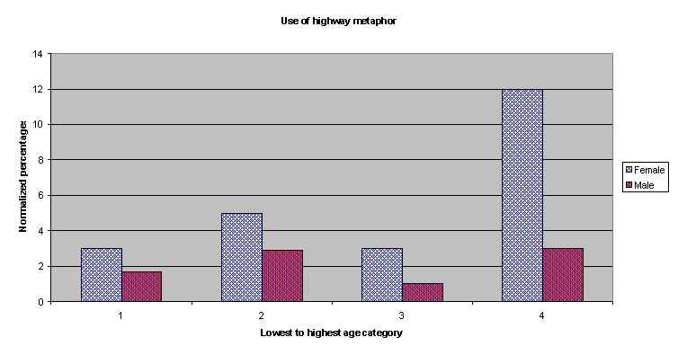
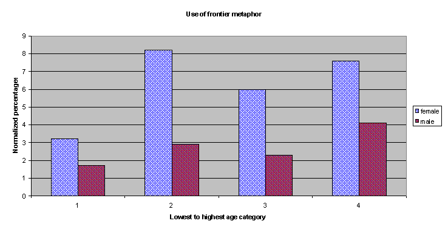

Information Research, Vol. 6 No. 1, October 2000


Information Research, Vol. 6 No. 1, October 2000 | ||||
|
|
|||
The nature of the World Wide Web is unfamiliar to most people. In order to make sense of this foreign environment people describe the unfamiliar in terms of the familiar. Metaphors are often used for this purpose. Since it is important to use the Web effectively it is important to acquire insight on user perceptions. Preliminary results of the Internet Metaphor Project are presented.
The way we describe something can affect the way we perceive it and way we perceive it can affect the way we use it (Whorf, 1939; Korzybski, 1948; Thaler, 1970; Ross, 1992). Users perceive the Internet and the Web in different ways and they utilize metaphors to describe this environment. The extent of the Web makes direct user studies problematic. Representative statistical sampling tacitly assumes a homogeneous mix. This is not a valid assumption in the vast on-line environment. There is no typical Web user. This research study addresses two associated problems. How do people perceive the Internet and the Web? How can the Internet become an effective and efficient platform of communication about itself?
Metaphors have power. Metaphors have structure. Metaphors are ubiquitous. The power of metaphors to cast cognitive images has a long and rich history (Johnson, 1946; Lakoff & Johnson, 1980; Deetz & Mumby, 1985; Smith & Turner, 1995). The impact of computer-based metaphors has been extensive (Rohrer, 1995; Stefik, 1997). One needs only to consider the paradigm of the computer desktop or consider names such as Netscape Navigator or Internet Explorer to view examples of metaphor penetration (Rothstein, 1996; Johnson, 1997). Since Web development is expanding and Web use as a mass media platform is also increasing, the acquisition of knowledge on the perceptions of the user is a significant area of applied Internet research.
Metaphors can be placed into several theoretical categories (Ortony, 1979; Lakoff & Johnston, 1980). Some common examples appear below (Table 1):
| Metaphor Type | Textual example | |
|---|---|---|
| spatial | I fell into a depression. | |
| ontological | A mind is a terrible thing to waste. | |
| personification | Life is cheating me. | |
| metonymy | She is into dance. | |
| synecdoche | Cars are choking our roads. | |
| literal | The Turnpike is very heavy this morning. | |
| homonymic | I am in the room and I am in love. | |
| poetic embellishment | "She was my English rose" (Prince Charles) | |
Davidson (as cited in Coyne, 1995, page 262) refers to metaphor groupings as untrue statements that are not lies. Metaphors by their power of extension have the power to trap the unwary by promoting faulty logic (Wilson, 1961; Budd & Ruben, 1979; Cooper, 1997). This phenomenon is the basis for an extended theory of persuasion and propaganda (Kelling, 1975; Jamieson, 1980). It is important to recognize that any theoretical foundation of Internet metaphors must be grounded in user responses in their own words. The theory of statistical self-selected sampling is appropriate for a preliminary study of Internet metaphors (Willsky, 1997; Karen, 1997). It is not evident how traditional representative sampling can be accomplished in the Internet context since there is much user variation even within the same Internet domain. A self-selected sample overcomes this difficulty because it functions as a focus group.
There have been only a few analytic studies of Internet metaphors in general or Web metaphors in particular (e.g., Palmquist, 1996; Gold, 1997). Other studies have often focused on word play (Cunningham, 1996; Davis, 1997) or general usage (Rohrer, 1995; 1997). These initial studies suggested the existence of general topical categories from which more refined studies might be derived. Word play studies demonstrated the ubiquitous use of Internet metaphors by the on-line community. The latter has applications toward computer jargon as a separate and distinct linguistic form. Together these and other related studies showed fairly conclusively that the Internet has become a platform for the communication of information in its own right.
Word play studies, albeit entertaining, are intrinsically language specific and thus have questionable generalization value. The methodologies of prior studies were often hampered by the number of accessible participants, the associated cost of reaching them and the difficulty of creating awareness of the study on a global Internet scale. It is neither effective nor efficient to use a traditional paper-based data collection technique to study users scattered across the globe. In addition, many data collection techniques are structured more toward the convenience of the researcher than that of the user. This is a subtle but important distinction. The single greatest weakness of most prior studies was that they could not or did not reveal why users described the Internet as they did. In the absence of this data prior analyses were potentially incomplete and potentially biased by the perspective of the researcher.
A case can be made that a research study on Internet and Web metaphors is ultimately based on two primary, associated research questions.
Many specific research questions can be posed under the aegis of the above. The unit of analysis is the individual user. The unit of data is the metaphor utilized by the user. Metaphor word-stubs identify themes. Some specific research questions addressed in the project study are listed below:
This study used a self-selecting sampling technique rather than a conventional representational sampling approach. The former has the advantage that motivated users provide a response to the study. The disadvantage is that extrapolation must be done with care. Traditional sampling assumes that a representation of the entire sample can be derived from a homogeneous sub-sample. It is highly problematic to form such a sample on an Internet scale with users grounded in diverse ethnic, cultural, political, economic cultures that also have a spectrum of on-line experience.
A preliminary sample of N=350 users was collected in the first few weeks of data collection. Although this is small on in comparison to the universe of all Internet users it is nevertheless four times greater than any prior Internet metaphor study and the first to collect text-based data of the user perceptions and explanations in their own words.
Since it was important to collect metaphor data in the users own words a questionnaire format was utilized however paper-based questionnaire was recognized to be inadequate on an Internet scale. An automated on-line questionnaire in the form of a Web page was developed to collect demographic, scales, categorical and textual data. Variables included level and extent of use, age and gender, extent of training, general metaphor categories, specific descriptions from the user and their explanations. The latter appeared in free text. After the initial pilot study an additional question on the source of awareness of the study was added. The responses of this last query helped track the scope of penetration.
A Web-based questionnaire had the advantage of being readily available at any time to any user anywhere in the world. User responses to the form were automatically transmitted to a designated electronic mailbox of the researcher. Responses arrived at all hours from all over the Internet and continue to arrive to this day.
This study intended to obtain data on user metaphors in their words and with their own explanations. Hence the Internet became a platform for the communication of information about itself. The advantages of this medium included ease of access, global awareness, rapid distribution, automatic data collection, immediate feedback and minimal cost. It is highly unlikely any paper-based methodology could inform potential participants of the study or even attract their attention. on-line special interest groups and on-line discussion forums in the form of Usenet newsgroups and list servers provided a remarkably effective mechanism in which to advertise the study. Relevant newsgroups could be identified from the Look for program (available on many Unix host servers) or by published numerous newsgroup lists. Relevant listservs could be rapidly identified by their corresponding published lists or through on-line repository index sites (e.g., http://tile.net/lists or http://www.liszt.com).
| American Library Association-Office of Intellectual Freedom |
| American Communication Association |
| Chief Information Officers Society |
| Communication, Research and Theory Network |
| H.W. Wilson Web |
| Interpersonal Computing and Technology |
| Language Use Society |
| Library and Information Technology Association |
| Mideastern Michigan Region of Cooperation |
| National Happenings Digest |
| Net Trainers |
| New York Libraries Information Network |
The index sites provided information on listserv subscription size. The extent of the potential target audience is important because it provides a multiplicative factor. For example, if a listserv had 10,000 subscribers then a single e-mail announcement message sent to the moderator relayed in turn to all its members would result in an exposure to 10,000 potential participants. By way of comparison, a traditional study with this same level of exposure would require 10,000 forms to be manually distributed, a tedious labor-intensive and costly process.
This distribution scheme has the advantage that the cost of a mass distribution by the researcher is negligible and, in addition, no prior knowledge of the individual names of the potential participants or their addresses was required. The researcher only needed to know only the electronic address of the moderator and not that of the group members individually. The initial procedure thus consisted of identifying relevant newsgroups or lists, sending an announcement of the study to the moderator (editor) and requesting that the moderator submit the message to the subscription list. The moderator almost always cooperated fully and often within minutes. Exploiting the on-line multiplicative effect meant that hundreds of thousands of potential participants could be informed by sending a single announcement message to a few dozen groups.
The method of listserv distribution can also engender a cross-posting effect. Users often subscribe to multiple listservs. A subscriber of listserv #1 would post the announcement message to listserv #2 so now there is an additive effect as well as the aforementioned multiplicative effect. Exploiting this effect could easily increase exposure by an order of magnitude with no increase in researcher effort. The project study URL was also registered with search engines such as AltaVista, Inktomi, Northern Light, Yahoo, Search.com, Web Crawler, Go Network, Excite and various meta-search engines. Since the study of metaphors is an active area of contemporary communication research many respondents encountered the Internet Metaphor study when using these tools for their own work.
It is important to reduce the time delay between participant awareness and the acquisition of data input. The participant may lose interest. Thus, the Web announcement message contained a direct hypertext link to a data collection instrument. Paper forms can get lost. The announcement message did not get lost because it would reside in the user's own electronic mailbox or newsgroup. People do not always read a paper announcement message when it arrives. An on-line special group distribution will retain the message for the reader until it is ready to be read. Data input was not restricted to researcher availability. Users could submit data at any time.
A common problem with on-line data acquisition is that different versions of different Web browsers can result in pages that are not viewable by all users. This problem was avoided in the study by intentionally creating the data input form in generic HTML. (Contemporary browsers now support advanced features so follow-up studies can use XML and Java applets for an enhanced user interface.) The on-line form incorporated an explanatory section, examples, discrete scales, an e-mail contact address, comparative scales and the opportunity to enter multiple metaphor descriptions and explanations in their own words and in free text. This data was then automatically consolidated into a template file and transmitted by electronic mail to the study repository when the user clicked the Submit button.
The data automatically arrived as a text e-mail message to a pre-assigned electronic mailbox and it arrived at all hours. The template imposed a structural framework to the data input. A special indicator was placed in the e-mail response subject line so that data responses could be distinguished from user comments. The data were downloaded daily into a special project directory on a host Unix machine, periodically exported by the FTP protocol to an off-line disk and then consolidated imported into a relational database management software program (Microsoft Access).
The frequency distribution of discrete variable values was tabulated. Word-stubs were identified in the user metaphor descriptions. This was done on their primary and secondary metaphor responses. Duplicate responses from repetitive submissions and empty responses (no data) were eliminated. The data were pre-screened through a variety of consistency checks. Subsets of the data were extracted as defined by variable parameters. Patterns in data relationships were visualized by graphical representations because this is a preliminary study and based on a self-selecting sampling methodology. Traditional statistical tests such as chi-squared and t-test were not performed since they are based on a representative sampling model.
Conditional probabilities measure the likelihood of one event given another. For example, the probability of a user describing the Internet in terms of a place, given that they were a Novice. This can be calculated by Bayes Rule:
The study was allowed to run for several weeks and a preliminary analysis was begun when the sample size reached N=350. This result demonstrates a monotonic, decreasing relationship between the use of a place metaphor by novices to experts. It might suggest that the user cognitive images of the Internet as a location in space changes or evolves as the level of skill increases. On the other hand, based on this sample, the likelihood of describing the Internet as an object (tangible or intangible) seemed to steadily increase. Whether or not this relationship holds for larger samples or for stricter definition of skill level remains to be seen.
| Perceived skill level | Use of a place metaphor | Use of an object metaphor |
|---|---|---|
| Novice | .87 | .12 |
| Intermediate | .80 | .20 |
| Advanced | .79 | .20 |
| Expert | .72 | .27 |
Men tended to consider themselves as higher skilled users while women tended to perceive themselves as lesser skilled on-line users.
| Perceived Skill | Female n= | Male n= |
|---|---|---|
| Novice | 19 | 9 |
| Intermediate | 63 | 36 |
| Advanced | 78 | 66 |
| Expert | 22 | 56 |
| Total | 182 | 167 |
These data could also be broken down by metaphor word-stub. The theme of Information dominates user perceptions of the Internet and the Web. The Internet is secondarily described as a library. The phrase "information superhighway" which appeared often in the mass media has not had deep penetration into the user cognitive image.
| The Internet is a ... | ||||
| Gender | Information n= | Network n= | Library n= | Highway n= |
|---|---|---|---|---|
| Female | 32 | 5 | 18 | 9 |
| Male | 14 | 4 | 9 | 13 |
Table 6 expresses the likelihood that a user is of low or high skill level GIVEN that they selected a particular type of Place or Object metaphor. While these probabilities are currently too low for clinical prediction nevertheless the values of 0.70 and 0.64 are sufficiently high to warrant further research attention.
| Given the Internet is a ... | ||||
| User Perceived Skill | Open Place | Closed Place | Animate Object | Inanimate Object |
|---|---|---|---|---|
| Low | .38 | .34 | .28 | .33 |
| High | .61 | .64 | .70 | .64 |
In this data sample with normalized percentages, females were more likely to use a highway metaphor than did males and this held true over all age categories.

In this data sample with normalized percentages females were more likely to use a frontier metaphor for the Internet than did males and this held true over all age categories.

Metaphors from novices often bear a sense of confusion, complexity or frustration while experts are much more anchored in reality. One may speculate that the former is an expression of the novelty of the Web experience. This explanation is appealing but is not consistent with the fact intangible metaphysical metaphors were used solely by Experts and never by Novices. This might be indicative of a cognitive paradigm change and a function of the amorphous nature of the Web.
| The Internet is a ... | |
| Novices | Experts |
|---|---|
| bottomless pit | chameleon |
| maze | community |
| snaggled skein of yarn | idea processor |
| wide endless road | haven for free speech |
| big bookstore | bookstore with a switchboard |
| locked library | huge library |
| The Internet is a... |
| new dimension |
| void of omnipotence |
| cooperative chaos |
| fractal |
| world that exists in consciousness |
The preliminary results of this study provide empirical support to the idea that users do indeed utilize metaphors to describe their image of the Internet and the Web. These metaphors appear to manifest only a few dominant themes and may, perhaps, be verbal markers. Men and women appear to project different self-perceptions of themselves as Internet users. The results are important because they suggest the existence of different cognitive images on the part of differently skilled users. If the way the Web is described affects perception and use then Internet metaphors may show a focus for different classes of users.
Knowledge of these images may enhance future Web development. For example, Lawson (1997) has suggested that men and women navigate differently in unknown territories. Men tend to prefer absolute addressing (4 Arbit Road) while women tend to prefer relative addressing (Second house on the right). The way people navigate in a foreign environment may affect on-line information retrieval and future Web search engine design (Canter, Rivers & Storrs, 1985; Canter, Powell, Wishart & Roderick, 1986). The fact that more women than men use the highway metaphor may impact on this development.
Bayesian probability can measure the likelihood that one event occurs given another. A preliminary analysis of Bayesian probabilities of several study variables suggests that it may be possible to predict attributes of the users based on their own descriptive language. This may be a significant marker. The predictive power is currently low but future studies with more refined measures may have a stronger foundation.
Novices tended to use finite, tangible, delimited, closed, delineated metaphors while Experts tended to use more metaphysical, intangible, open metaphors. This may indicate the lack of comfort level of the Novice to conceptualize something amorphously vast and the significant ability of Experts to do so. This difference in conceptual imagery may have ramifications for the development of future Web services to target audiences.
Information was the dominant theme associated with Internet and Web metaphors based on word-stub frequency. Those who used this metaphor tended to describe it more often as an information source rather than as an information conduit (as in highway). The second and third most common themes were that of Library and Network.
The Web was often described as a dysfunctional library. Users described the Internet as a library with books scattered all over the floor, an uncatalogued library, a library with its lights turned off. This suggests an image of chaotic information access. A library structures its information and so the two metaphors are in conflict.
Some user metaphors defied simple explanation. The Internet-as-Spaghetti may suggest an image of entanglement but it is unclear how to interpret the Internet as bowl of Jello. Sweet rewards? Transparent and hence holds no secrets? Unfortunately the users did not supply an explanation.
More females used frontier metaphors than did males and this occurred irrespective of age distinctions. A frontier is often thought of as a pristine place (female?) as opposed to a jungle that must be conquered (male?). This attitude difference may be a significant aspect of future Web development.
More females thought of the Internet in terms of a highway than did males and this was true over all ages. A highway is associated with structure on many levels (maps, directions, rules, control, etc.) yet highways are fundamentally neutral in sexuality as opposed to ships or planes. The use of the highway metaphor tended to decrease as experience increased.
Novice users tended to describe the Web more in terms of a place, something that which is fixed in space and time. A library is a building fixed in space and associated with information. Thus, it was not surprising to encounter Library themes. It was surprising to see the frequency of this description decreasing consistently with higher skill levels. It may suggest that lower skilled Web users need a cognitive anchor to conceptualize the Web while expert users can free themselves of this mental support. This may have applications to Web education and Web commerce.
Internet metaphors appear to be a necessary component in the user conceptualization of the Internet and the Web. The concepts so used manifest themselves as common themes that might function be a subtle marker. Metaphor images seem to change as skill level develops. It has been shown that it is possible to create effective and efficient on-line methodology using the resources of the Internet as a tool to study itself.
Data are now available that describe the mind-set of the user in their own words and with their own explanations. Communication theorists can sift through this empirical data and perhaps extract deeper meaning behind the verbalizations and possibly generate a broader theory of the Internet communication.Many users provided their electronic address with their data. A follow-up study on these same users could confirm if the general results continue to apply. A variety of additional and more sophisticated variables could be measured in future studies.
The author wishes to thank Professors David Carr, Lea Stewart, Kathleen Burnett, James Anderson, Jose Perez-Carballo and other faculty and staff of the School of Communication, Information and Library Studies (SCILS) of Rutgers University for supporting the doctoral research. Thank you Karen Novick of SCILS Professional Development whose students helped attune me to the problems of Internet metaphors and Professor Ruth Palmquist of the University of Texas-Austin for permission to use portions of her HTML code. Metaphors Be With You!
The complete set of results, graphs and tables of the Internet Metaphor Project are freely available on computer diskette from the author. Please specify IBM-PC (Microsoft Word) or Apple Macintosh (ClarisWorks) format.
Interested readers may examine or participate in the project study.
How to cite this paper:
Ratzan, Lee (2000) "Making sense of the Web: a metaphorical approach". Information Research, 6(1) Available at: http://InformationR.net/ir/6-1/paper85.html
© the author, 2000. Updated: 31st July 2000
Contents |
|
Home |